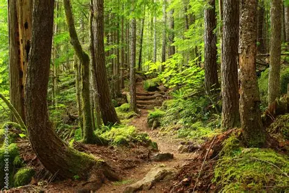
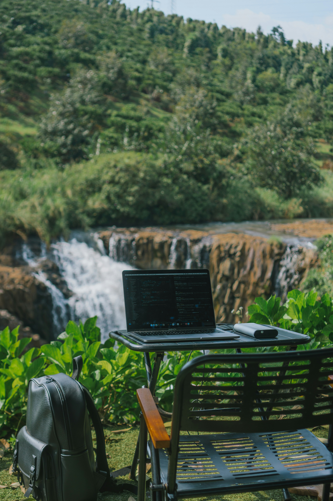
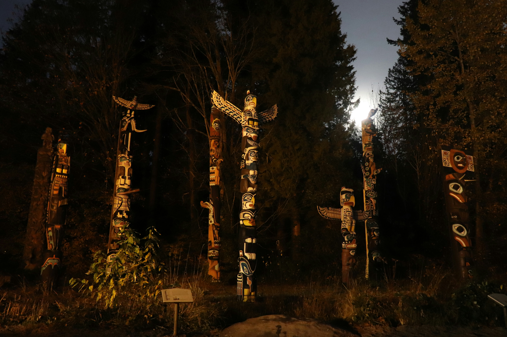

Supporting Indigenous Students
Welcome

This website is dedicated to supporting Indigenous students in their academic journey. We provide a variety of resources, guidance, and community connections to help you succeed in your studies and beyond.
Explore our sections to find information on who we support, academic guidance, wellness resources, student networks, success stories, and available resources.
Balance & Wellness

Resources and practices to support emotional, spiritual, and physical well-being while studying.
Academic Guidance

Study supports, tutoring, and academic planning to help you reach your goals.
Community & Networks

Connect with student networks, mentors, and cultural supports to build community and belonging.